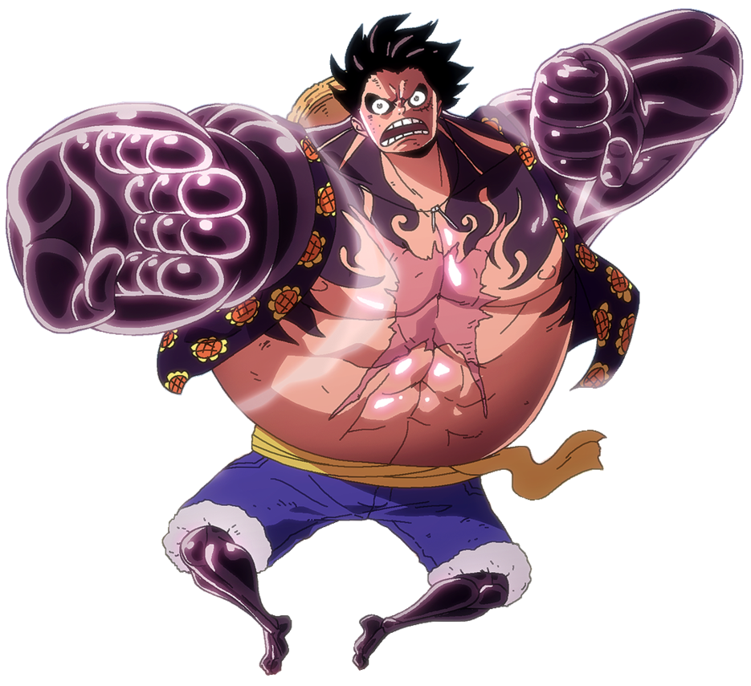
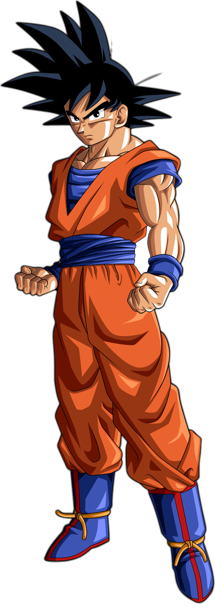

"포기하지 않는 것.
그게 내 닌자도야."
우즈마키 나루토 — 나루토 NARUTO
긴 여정도 포기하지 않고 끝까지!
D안 · Apple × Anime
삿포로에서 후쿠오카까지.
우리 가족이 함께하는 14일간의 여정.
2026. 4. 27 — 5. 10

"해적왕이 될 거야!!"
몽키 D. 루피 — 원피스 ONE PIECE
우리 가족의 대모험이 시작됩니다
Day 1-3 · 4/27 — 29
홋카이도의 수도.
눈과 맥주와 라멘의 도시.
삿포로 시민의 부엌. 하나마루스시, 기타노구루메테이, 오이소 — 셋 중 하나를 골라보세요.
1878년에 지어진 삿포로의 상징. 구 홋카이도청의 붉은 벽돌 건물도 도보 10분 거리.
홋카이도 명물. 부드러운 양고기를 돔형 철판 위에서. 히라쓰카 본점에서만 느낄 수 있는 맛.
홋카이도는 4월 말에도 10~15°C. 얇은 겉옷은 필수입니다.

"한계를 넘어서는 것.
그게 수행이다."
손오공 — 드래곤볼 ドラゴンボール
삿포로의 추위를 넘어, 도쿄로
Day 4-7 · 4/30 — 5/3
전통과 초현대가 공존하는
세계 최대의 메트로폴리스.
도쿄에서 가장 오래된 사원. 카미나리몬을 지나 나카미세 상점가에서 전통 간식을 맛보세요.
높이 634m. 석양이 물드는 도쿄의 파노라마를 전망대에서 감상하세요.
도쿄 메트로 72시간 패스(1,500엔)로 지하철 무제한 이용. 팀랩은 반드시 사전 예약.
"포기하지 않는 것.
그게 내 닌자도야."
우즈마키 나루토 — 나루토 NARUTO
긴 여정도 포기하지 않고 끝까지!
Day 8-9 · 5/4 — 5
천년 고도.
사슴과 대불이 반겨주는 평화로운 도시.
약 1,200마리의 야생 사슴이 자유롭게 돌아다니는 공원. 센베이로 먹이주기 체험.
세계 최대 목조 건물 안의 높이 15m 대불. 기둥 구멍 통과에 도전해보세요.
사슴에게 센베이를 한 번에 다 보여주지 마세요. 달려듭니다.
"강해져라.
그래야 소중한 것을
지킬 수 있다."
미야모토 무사시 — 베가본드 バガボンド
교토, 사무라이 정신의 고향으로
Day 10-12 · 5/6 — 8
천년의 수도.
일본 전통 문화의 정수를 만나다.
천 개의 붉은 도리이가 터널을 이루는 장관. 이른 아침이 포인트.
황금빛 금각사와 거울 연못의 완벽한 반영. 교토의 아이콘.
교토 버스 1일권(700엔)이면 시내 대부분 커버. 기모노 대여는 사전 예약 시 할인.

"흐르는 물처럼,
어떤 형태에도
맞출 수 있게."
카마도 탄지로 — 귀멸의 칼날 鬼滅の刃
여행의 마지막까지 유연하게!
Day 13-14 · 5/9 — 10
일본 최고의 먹거리 도시.
야타이 포장마차의 고향.
이치란 라멘 본점에서 정통 하카타 돈코츠. 카에다마 필수.
후쿠오카의 상징. 강변 포장마차에서 라멘, 꼬치구이, 교자를 즐기는 특별한 저녁.
후쿠오카 공항은 시내에서 지하철 5분. 마지막 날까지 알차게.